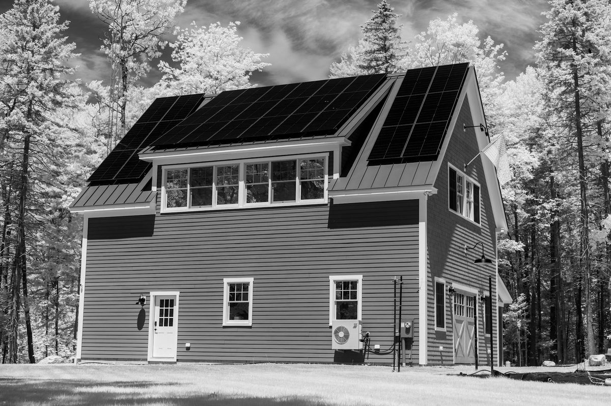

TVA EnergyRight Rebates for Spray Foam Insulation in 2026
Updated May 2026. Program details change - always verify current details with TVA, your local power company, and a licensed tax advisor.

Quick Summary: What Knoxville Homeowners Can Claim in 2026
A Knoxville-area homeowner installing spray foam in 2026 can typically stack three layers of incentives: a TVA-administered rebate through the local utility (often KUB), the federal 25C Energy Efficient Home Improvement Credit, and depending on income, a Home Uplift grant. Combined, these can offset 30-70 percent of a typical Knoxville spray foam project cost.
1. TVA EnergyRight Home Uplift
The flagship program. Home Uplift provides up to $10,000 in home efficiency upgrades for income-qualified TVA service-area households. Insulation - including spray foam - is one of the covered measures alongside HVAC, water heating, and air sealing. To qualify in 2026:
- Home must be in TVA service area (all of Knox County and most of East Tennessee qualifies)
- Household income at or below 200 percent of federal poverty level (for a family of four, roughly $62,400 in 2026)
- Home must be owner-occupied single-family or 1-4 unit multifamily
- Home must be an existing home (not new construction)
The full cost up to $10,000 is covered as a grant - no repayment required. The program runs through participating local power companies including KUB in Knoxville. Application is through KUB's website or by phone.
2. TVA EnergyRight Home Energy Score Upgrades
For Knoxville homeowners who do not qualify for Home Uplift, the Home Energy Score Upgrade program offers rebates for measured efficiency improvement. A certified Home Energy Score assessor rates your home on a 1-10 scale before work. After upgrades, a rescore quantifies the improvement, and TVA pays a rebate proportional to the score increase. Typical rebates land in the $500-$2,500 range for spray foam-driven improvements.
3. Federal 25C Energy Efficient Home Improvement Credit
The Inflation Reduction Act 25C credit, extended through 2032 (subject to any 2025-2026 legislative changes), returns 30 percent of the cost of qualifying insulation work as a federal income tax credit. Annual cap of $1,200 specifically for insulation and air sealing. Both closed cell and open cell spray foam qualify when installed in residential energy-efficient assemblies. Documentation requirements:
- IRS Form 5695 filed with your federal return
- Contractor invoice itemizing the insulation cost separately from any other work
- Manufacturer Certification Statement (we provide this with every Knoxville job)
The 25C credit stacks with TVA rebates - you can claim both for the same project. The 25C credit reduces your federal tax bill dollar-for-dollar; it is not a deduction.
4. USDA REAP for Rural and Agricultural Properties
The Rural Energy for America Program covers spray foam projects on rural Knox, Anderson, Sevier, and Loudon County properties used for agriculture or as small rural businesses. REAP provides grants up to 50 percent of project cost (capped at $1 million but more typically $5,000-$25,000 for spray foam projects). Application is through USDA Rural Development - the paperwork is real but the dollars are substantial for qualifying pole barn, ag building, and small commercial spray foam projects.
5. KUB-Specific Programs
Knoxville Utilities Board, as a TVA distributor, administers TVA programs locally and may offer additional one-time incentives - check KUB.org or call 865-524-2911 for the current menu. KUB also runs a free Home Energy Audit program where a KUB technician identifies opportunities (spray foam is almost always on the list for older Knoxville homes).
How to Combine Programs for Maximum Savings
For a typical $12,000 Knoxville whole-home spray foam retrofit, here is how stacking works for an income-qualifying household:
| Program | Benefit |
|---|---|
| TVA Home Uplift grant | $10,000 of project covered |
| Federal 25C credit | 30% of remaining $2,000 = $600 tax credit |
| Out-of-pocket after stacking | $1,400 |
For a non-income-qualifying household on the same $12,000 project:
| Program | Benefit |
|---|---|
| Home Energy Score Upgrade rebate | ~$1,500 (varies by score improvement) |
| Federal 25C credit | $1,200 (capped) |
| Out-of-pocket after stacking | $9,300 |
Documentation Checklist for Knoxville Spray Foam Rebates
- Itemized contractor invoice with insulation cost broken out
- Spray foam manufacturer certification statement
- Before/after Home Energy Score (if applicable)
- Photos of installed foam with depth verification
- Permit and inspection records (if applicable)
- KUB or other utility account number for credit routing
- IRS Form 5695 for the federal credit
We provide all of this in a single PDF rebate packet with every Knoxville spray foam install. You hand it to your tax preparer and your utility company and the credits flow through.
Common Mistakes That Cost Knoxville Homeowners Rebates
- Hiring an uncertified installer. TVA rebates require the contractor be on the QCN (Quality Contractor Network). Always ask before signing.
- Lumping insulation into a bigger remodel invoice. If the invoice does not separate the insulation line, you cannot claim 25C on that portion.
- Missing the pre-work assessment for Home Uplift. The income-qualified program requires assessment before work begins. Cannot be retroactive.
- Filing too late. Most rebates require submission within 90 days of project completion.
- Forgetting the manufacturer cert statement. Without it, the federal credit is unsupported in audit.
Get a Rebate-Eligible Quote in Knoxville
Every quote we provide identifies applicable TVA and federal programs and includes the rebate packet at install. Free written quotes. Call (865) 564-7823 or visit our contact page.
Related reading: